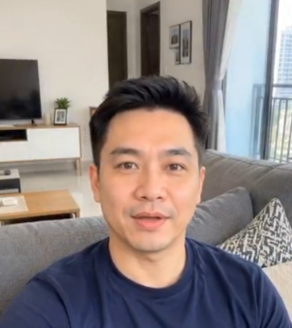
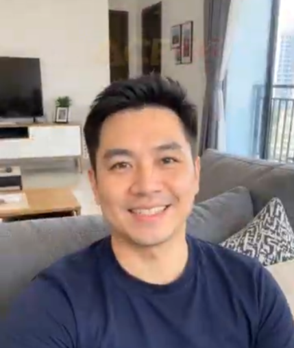

开启简约而宁静的生活：在惬意居所里找回内心的平衡与喜悦

在这个快节奏的时代里，拥有一处能让身心彻底放松的港湾显得尤为珍贵。充满明亮采光与简约线条的客厅，常常是我们停下脚步、重新整理思绪的理想场所。
明辉坐在自家温馨舒适的灰色沙发上，看着镜头，真诚地分享着自己对于“慢生活”的独特见解。对他而言，舒适的居家空间不仅关乎居住环境，更关乎内心的宁静与踏实。
1. 打造从容家居生活的三个小习惯
想要在日常生活中保持充沛的精力和愉悦的心情，不妨从以下三个简单的居家习惯开始：
保持空间的简洁与整洁： 定期清理不必要的杂物，让室内视野更加开阔，心情也会随之变得轻松明朗。
留出一片静心角落： 在客厅摆放舒适的沙发或靠垫，打造一个专门用于阅读、喝茶或冥想的专属空间。
引入自然光线与绿意： 打开窗帘让阳光洒满房间，搭配几盆生机盎然的绿植，瞬间为居室注入满满的生命力。

2. 微笑面对生活：从心底升腾的温暖与力量
谈到生活的真谛，明辉绽放出格外灿烂温暖的笑容。这抹真挚的微笑不仅拉近了与人的距离，也传递出一种发自内心的乐观与从容。
当我们将目光聚焦于生活中的美好细节——比如晨起的一缕阳光、一杯香浓的早茶，或是与朋友的一次真诚对话，内心的满足感与幸福感便会油然而生。
“生活的美好，往往藏在那些平淡而宁静的日常里。只要心中有光，平凡的日子也能绽放彩虹般的色彩。”
用积极的态度拥抱每一个崭新的一天，用微笑回应生活中的每一次起伏，你会发现，幸福其实一直都在我们身边。
总结
简约而温馨的家居环境，能够为我们带来无穷的心灵滋养。保持内心的从容与自信，用心经营每一个平凡的瞬间，让我们共同享受这份专属于自我的美好时光。
本故事旨在传递积极生活理念、简约家居美学与内心平静的力量。